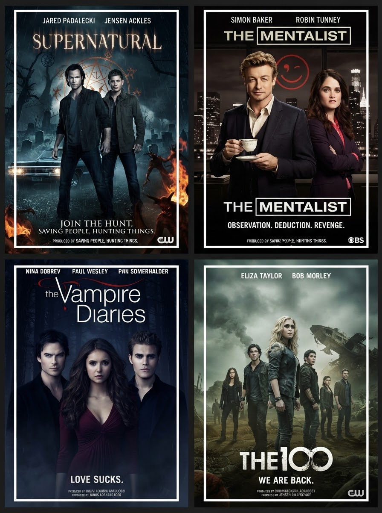

Introduction

Watching television series and films is one of my favourite ways to spend my leisure time. I enjoy interesting storylines, suspense, memorable characters and creative storytelling.
My Favourite Television Series
1. The Mentalist
Genre: Crime and Mystery
A crime drama centred on Patrick Jane, a consultant who uses his exceptional observation skills and psychological insight to help solve criminal cases.
2. The Vampire Diaries
Genre: Supernatural Drama
A supernatural drama involving vampires, friendships, relationships and mysterious events in the town of Mystic Falls.
3. The Originals
Genre: Fantasy and Drama
A supernatural drama following the Mikaelson family as they navigate power, loyalty, family relationships and conflicts in New Orleans.
4. Breaking Bad
Genre: Crime and Drama
A crime drama following Walter White, a chemistry teacher who becomes involved in the illegal drug trade. The series explores ambition, consequences and moral decisions.
5. Supernatural
Genre: Fantasy and Horror
A fantasy horror series following two brothers, Sam and Dean Winchester, as they investigate supernatural occurrences and fight mysterious creatures.
My Favourite Genres
- Crime and mystery
- Supernatural and fantasy
- Drama
- Horror and thriller
- Adventure
Why I Enjoy Watching Series
I enjoy watching series because they offer engaging stories, interesting characters and different perspectives. They provide entertainment and allow me to relax during my free time.